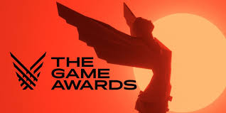

Les Game Awards est une soirée de récompenses annuelle sur diverses catégories, qui distingue une sélection de jeux vidéo sortis tout au long de l'année, aussi bien que des jeux vidéo sortis récemment, ou même certains annoncés officiellement avant la soirée de remise de prix. La cérémonie est présentée par Geoff Keighley au Microsoft Theater.

Les jeux nominés pour le grand prix du: jeu de l'année, étaient les suivants:
- God of War: Ragnarok
- Elden Ring
- Stray
- Xenoblade Chronicles 3
- Horizon Forbidden West
- A Plague Tale: Requiem
Après une soirée de stress et d'excitation, le jeu Elden Ring est sorti victorieux du titre très mérité de jeu de l'année !
Ce jeu a rénové le concept de monde ouvert en apportant un aspect plus ténébreux rappelant les nombreux jeux Dark Souls.
Mention spéciale tout de même au jeu God of War: Ragnarok qui a remporté le plus grand nombre de titre pendant cette soirée et
qui aurait pu tout autant qu'Elden Ring, remporté le titre de jeu de l'année.
D'autres récompenses intéressantes étaient abordées dans cette soirée. Par exemple, la récompense de la meilleure
adaptation de jeu regroupant quelques séries abordant le thème de certains jeu était très intéressante à observée.
En effet, cette année de nombreuses adaptations sont sorties du lot pour notre plus grand plaisir ! Une histoire indépendante
d'un jeu, en restant dans le thème, ajoute du contenu pour les plus grands fan des licenses abordées et peut faire découvrir
celle-ci d'une manière originale à d'autres.
L'excellente série Arcane du studio Riot Games reprenant le populaire jeu League of legends a finalement remporté ce titre!
Malgré l'excellence de la série, d'autres nominés étaient légitimes de remporté ce prix. Le film Uncharted a fait parlé de
lui lors de sa sortie et a été très apprécié des critiques. L'acteur principal Tom Holland est très apprécié et a donc apporté
un plus au film. Sinon, la série Cyberpunk: Edgerunner avait également toutes ces chances. Un style plus japonais à l'animation
rend cette série comparable voire meilleure que de nombreuses autres dans ce style. L'histoire prenante ainsi que les personnages attachants
et drôles rendent cette série également très remarquable.